A chronicle of disappearance
The sea did not disappear overnight. It dried over decades as more and more water from the Amu Darya and Syr Darya was diverted to irrigate cotton fields.
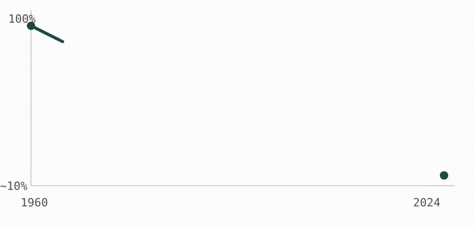
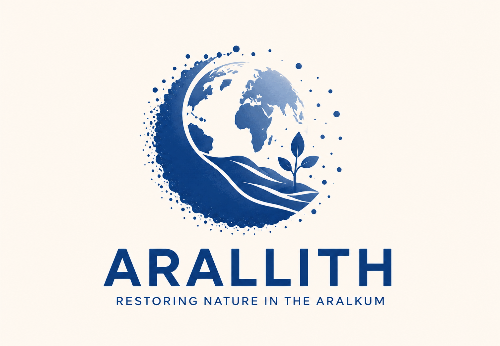
ARALLITH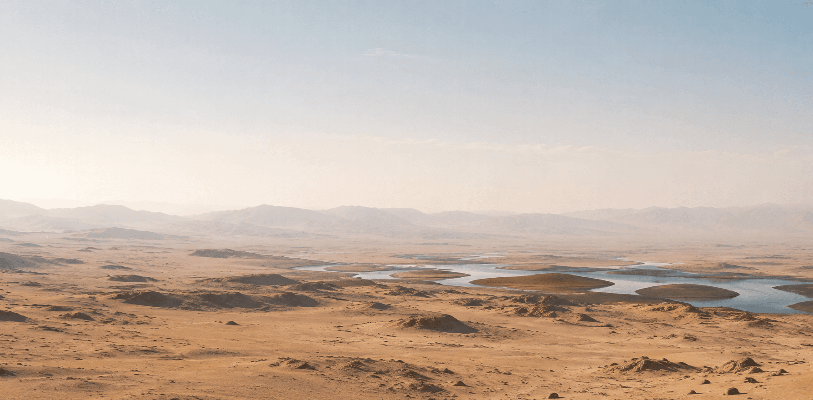
Countries in the affected region
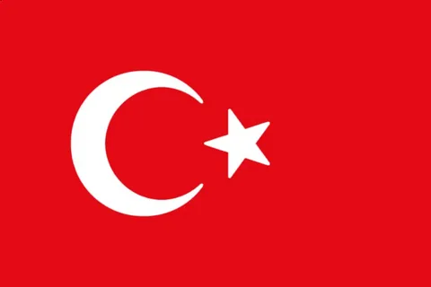
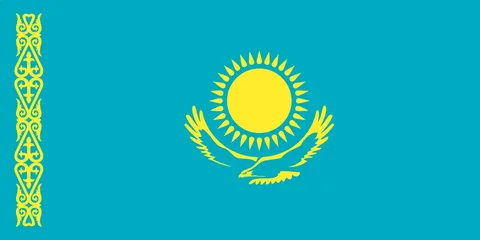
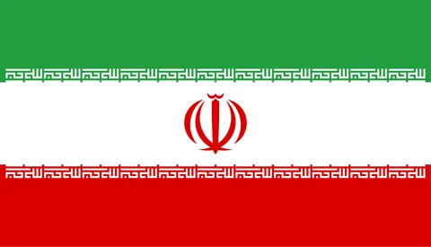
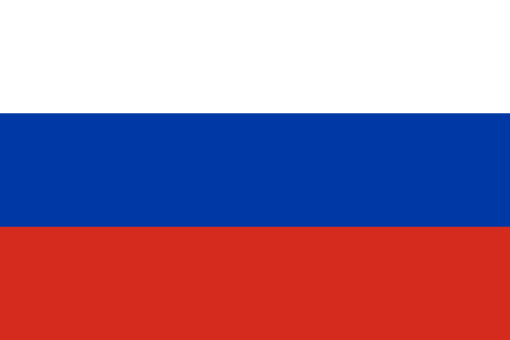
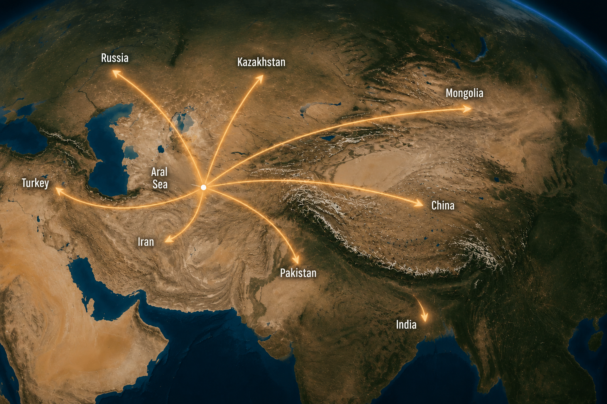
Where the world’s fourth-largest lake still lay in the 1960s, the salt desert of the Aralkum now stretches. Each year, winds lift millions of tonnes of toxic salt and dust from its bed and carry them thousands of kilometres.
The sea did not disappear overnight. It dried over decades as more and more water from the Amu Darya and Syr Darya was diverted to irrigate cotton fields.

| 1960 | Large-scale diversion of the Amu Darya and Syr Darya begins to irrigate cotton fields. The irrigated area grows from 4.5 to 7 million hectares. |
|---|---|
| 1987 | The water level falls so far that the sea splits in two: the North (Small) and South (Large) Aral Sea. |
| 2005 | The Kok-Aral Dam is completed in Kazakhstan in an effort to save at least the North Aral Sea. |
| 2014 | NASA satellites record the complete drying of the eastern basin of the South Aral Sea for the first time. |
| Today | About 10% of the sea’s historical volume remains. The southern part continues to dry up. |
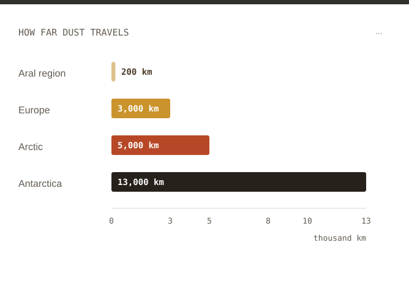
Winds over the Aralkum lift a toxic mixture of salt, sand, and pesticide residues and carry it thousands of kilometres. It settles on farmland, in cities, and even on glaciers.
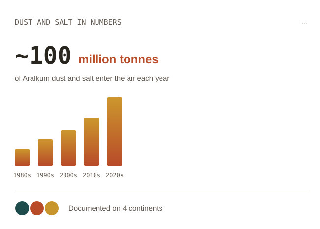
The number of recorded dust and salt storms in the region is rising as the exposed seabed expands, increasing soil erosion and harming the health of local residents.
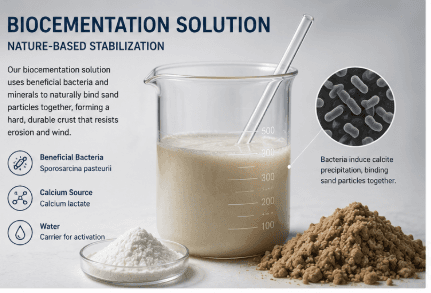
Our unique biocementation formula creates a strong crust that prevents salt and dust from becoming airborne.
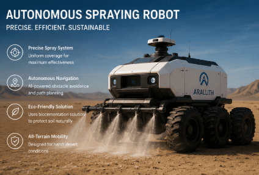
An intelligent, AI-controlled prototype applies the solution precisely, minimizing resource use and working in the harshest conditions.
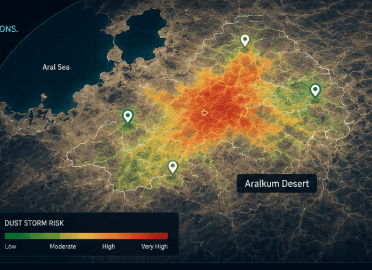
AI continuously tracks the robots, with comprehensive information about them displayed on the map.
Use artificial intelligence to forecast sandstorms and identify the most effective areas for treatment.
The main goal is to create a solution that can scale to other arid regions of the world, beyond the Aralkum.
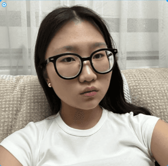
Raising awareness of environmental problems helps attract support, partners, and investors to develop the project.
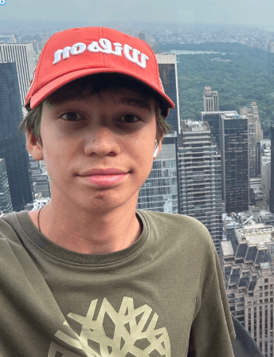
A consistent, modern interface makes the project easier to understand, more memorable, and more professional.
Explaining complex technologies in simple terms makes the project accessible to people of any age and level of knowledge.
Interactive maps, infographics, and animations help people understand the scale of the environmental problem and how the technology works.
Every environmental technology should combine scientific soundness, economic efficiency, and practical applicability.
Automating monitoring with drones and satellite data allows us to respond more quickly to environmental changes.
Develop biocementation technology that stabilizes the sands of the Aralkum, reducing the amount of dust and salt dispersed across the region.
Use artificial intelligence, satellite data, and autonomous robots to forecast storms, analyze site conditions, and optimize operations.
Create the conditions for gradual soil recovery, reduce environmental damage, and prepare the land for future revegetation and sustainable development.
FAQ
A desert that has formed since the 1960s on the dried bed of the Aral Sea. Its area is estimated at 5.5–6 million hectares across Kazakhstan, Uzbekistan, and Turkmenistan. It is the youngest desert in the world.
The main cause was the large-scale diversion of water from the Amu Darya and Syr Darya to irrigate cotton fields, which began in the Soviet era in the 1960s, together with major water losses in unlined canals.
Partly. The North Aral Sea in Kazakhstan is recovering thanks to the Kok-Aral Dam. The South Aral Sea depends on water from the Amu Darya, which Uzbekistan continues to use for irrigation, and is still drying up.
The roots of saxaul and other salt-tolerant plants hold sand and salt in place, reducing the intensity of dust and salt storms and gradually restoring part of the former seabed’s ecosystem.
Scientists have recorded salt dust from the Aralkum in the forests of Belarus and Norway and in Greenland’s glaciers. Traces of pesticides from the region have even been found in the blood of penguins in Antarctica.
© 2026 gr8r. All rights reserved.